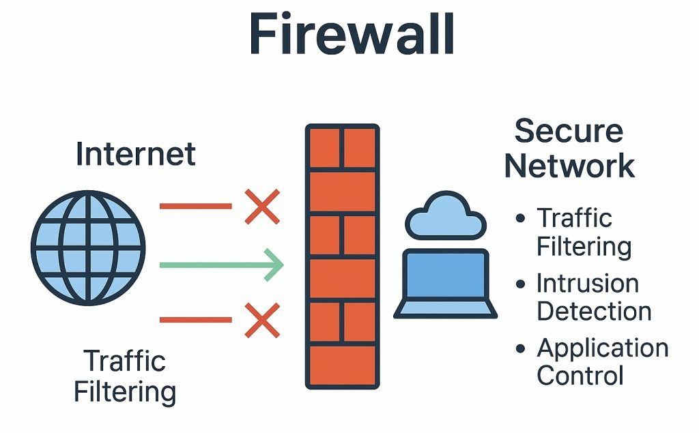
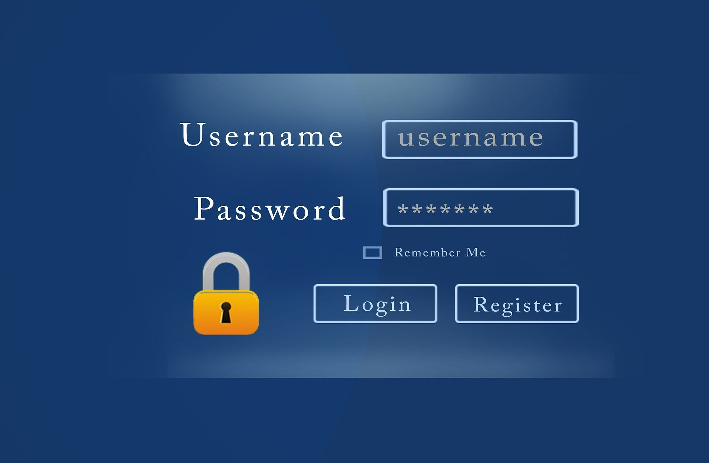

Seguridad en Redes Informáticas

Firewall
Es un sistema de seguridad que controla el tráfico de datos que entra y sale de una red.
Su función principal es bloquear accesos no autorizados y proteger los dispositivos conectados.
Antivirus
Es un programa diseñado para detectar, prevenir y eliminar software malicioso.
Ayuda a proteger computadoras y servidores contra virus, troyanos y otras amenazas.

Contraseñas Seguras
Las contraseñas son la primera barrera de protección para acceder a sistemas y servicios.
Deben contener letras, números y caracteres especiales para aumentar su seguridad.

Cifrado de Datos
El cifrado transforma la información en un formato ilegible para personas no autorizadas.
Esto garantiza la confidencialidad de los datos durante su almacenamiento o transmisión.
Buenas Prácticas de Seguridad
Para mantener una red protegida es recomendable seguir ciertas medidas preventivas:
- Mantener actualizado el sistema operativo y los programas.
- Utilizar contraseñas fuertes y cambiarlas periódicamente.
- No compartir credenciales de acceso.
- Activar la autenticación de dos factores cuando sea posible.
- Evitar conectarse a redes WiFi públicas no seguras.
- Realizar copias de seguridad de la información importante.
Resumen de Herramientas de Seguridad
| Herramienta | Función Principal |
|---|---|
| Firewall | Filtrar y controlar el tráfico de red. |
| Antivirus | Detectar y eliminar amenazas informáticas. |
| Contraseñas Seguras | Proteger el acceso a sistemas y servicios. |
| Cifrado | Proteger la confidencialidad de los datos. |